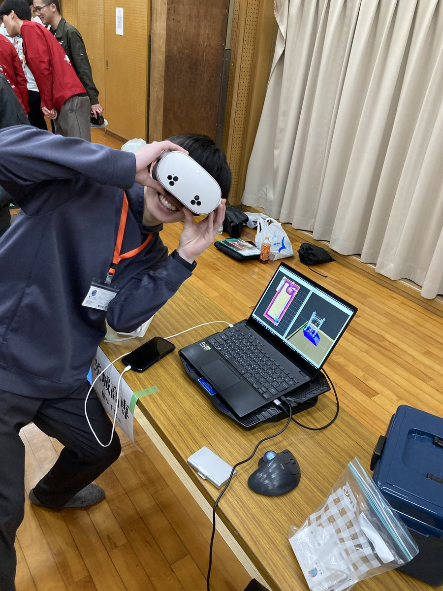

全国ロボコン交流会（全ロボ）で技術講習とブース展示を行い、全国の仲間と知識やこれからの活動について語り合いました。

技術講習を通じて全国の仲間とつながる
全ロボでの技術講習には、延べ400名が参加しました。東北だけでなく、西日本や北海道の学生とも交流し、地域を越えた強固なネットワークを築く機会になりました。地理的な距離に関係なく、ロボコンに取り組む仲間とつながれることを、あらためて実感しました。
経験を共有し、CoREへの問いを投げかける
講習では、CoREを3年連続で経験した選手がメインスピーカーとして登壇しました。過去のチームマネジメントで直面した苦悩や、組織が停滞したときの試行錯誤を、成功に至るための大切なプロセスとして共有しました。
朝9時という早い時間から集まった約200名の聴衆に向けて、「CoREは自分を見つめ直し、エンジニアとして本当に成長するための舞台である」というメッセージを届けました。答えを一方的に示すのではなく、参加者自身に問いかける発表を通して、CoREへの挑戦を考えるきっかけをつくりました。
技術を入口にした活動紹介
夜の交流会では、3DCAD（SolidWorks）を使った多人数同時設計に必要な「マルチボディ設計」の講習も実施しました。一つのファイル内で複数の部品を管理し、整合性を保ちながら設計を進める手法です。
設計者が現場で直面する課題に対して、まず実用的な知見を共有する。そのうえで、全国にいる仲間とオンラインで一つのロボットをつくるTRUの活動スタイルを紹介しました。技術への敬意を土台にすることで、活動の考え方やCoREへの挑戦を自然に伝えられたと感じています。
Maker Chipで交流をオンラインへ
会場では、メンバーが制作したオリジナルの「Maker Chip（メーカーチップ）」も配布しました。受け取った参加者には、ハッシュタグを付けたSNS投稿も呼びかけ、会場で生まれた接点をオンラインでの交流と発信につなげました。